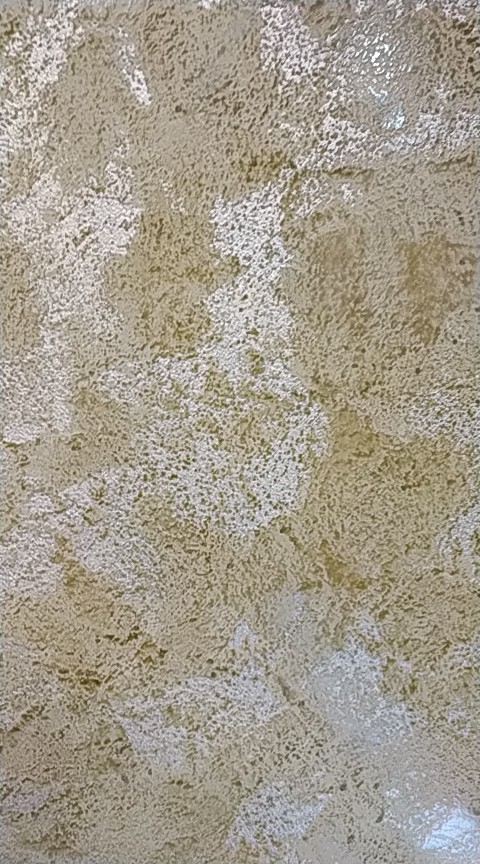
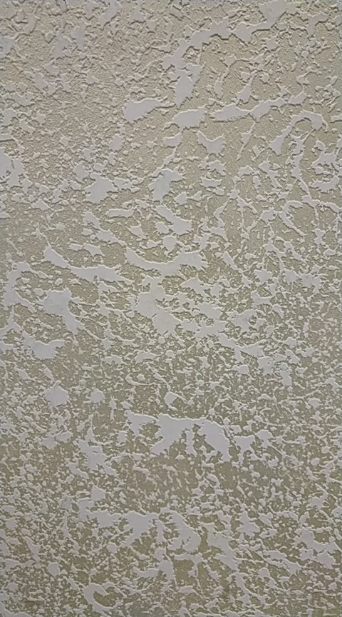
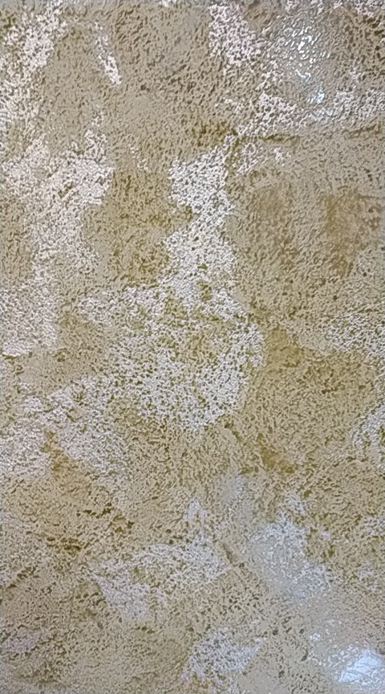
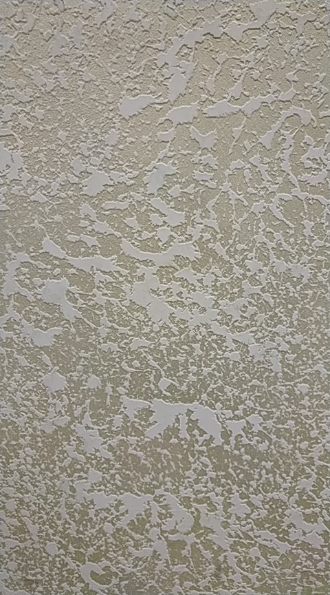

С помощью такой отделки стен можно создать неповторимый интерьер и индивидуальную направленность в дизайне.
Виды декоративной штукатурки:
Венецианская штукатурка Venedigputz-Декоративная, акриловая штукатурка для создания паропроникающих покрытий внутри помещений. Материал дает возможность получить эффект мрамора с высоким глянцем и отражением.
Strukturputz- Декоративная, акриловая штукатурка для создания, прочных, паропроницаемых покрытий внутри помещений. Материал дает возможность получить эффект натурального камня в том числе мрамора. Штукатурка имеет две фракции Strukturputz mini и Strukturputz maxi что позволяет получить эффект осыпавшегося, тесанного, шлифованного мрамора, а также других глянцевых и матовых эффектов.
Velvet Dekor- Декоративная краска для внутренних работ на основе специальных перламутровых пигментов. Тип «отточенто». Позволяет получить прекрасный бархатистый эффект, который переходит из блеска в мат в зависимости от изменения угла отражения cвета.
Diamant Sand- Декоративная, акриловая штукатурка на основе мраморной крошки и специальных перламутровых пигментов тип «Персия» для внутренних работ. Предназначен для декоративного покрытия поверхностей внутри помещений. Содержит компоненты на натуральной восковой основе.
Magie- Декоративная краска для внутренних работ, дает возможность получить замечательный трехмерный бархатный эффект. Предназначена для гипсовых и бетонных основ. Содержит замедлитель на натуральной восковой основе.
Elegant Farbe- Декоративное покрытие для внутренних работ. Благодаря наличию в составе материала кварцевого песка, который рассыпаясь по поверхности, создает эффект перламутровых песчаных переливов.
Travertino- Материал разработан для создания прочных, паропроницаемых покрытий внутри помещений. Декоративная штукатурка Travertino дает возможность получить эффект природного камня травертина.
 


